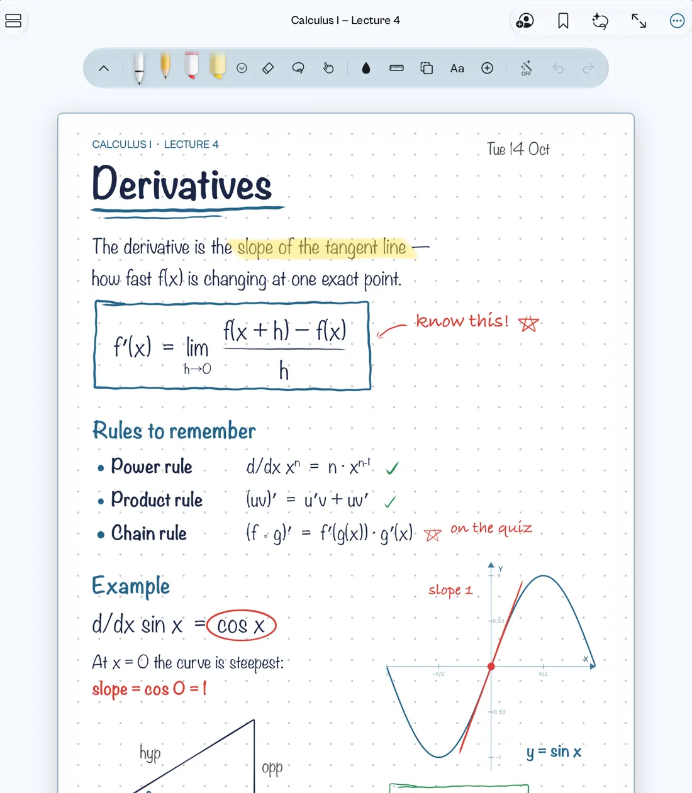
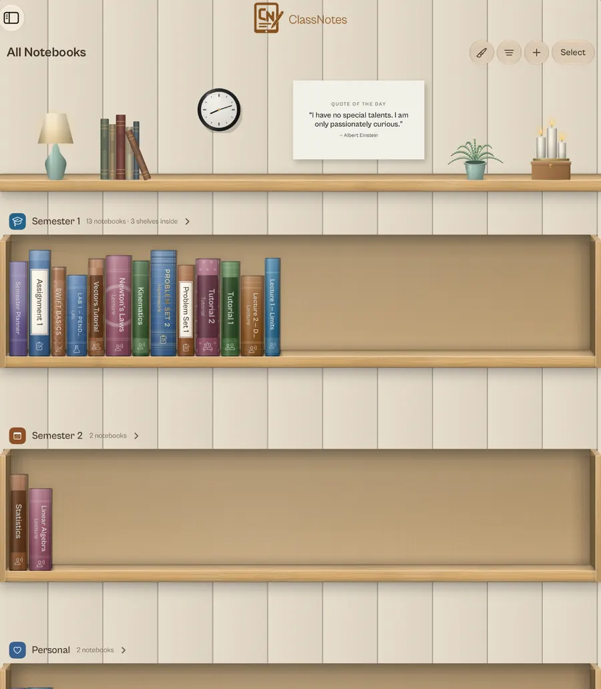
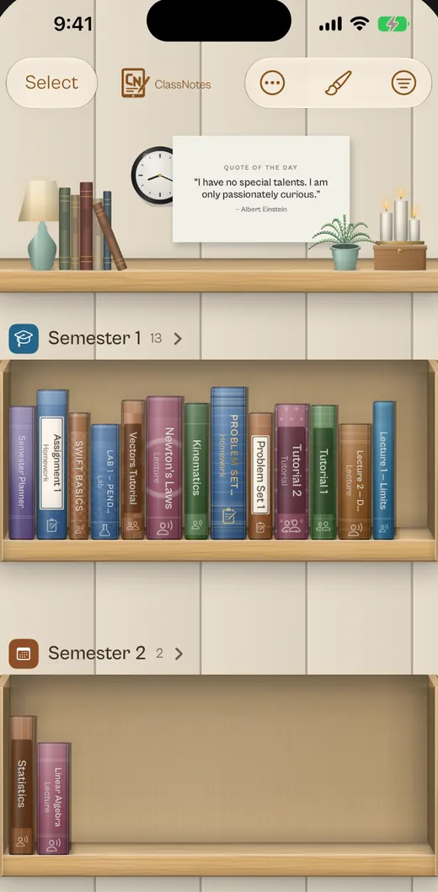
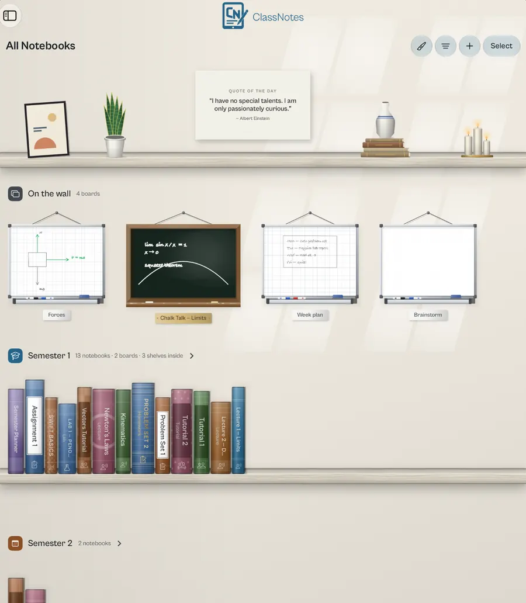
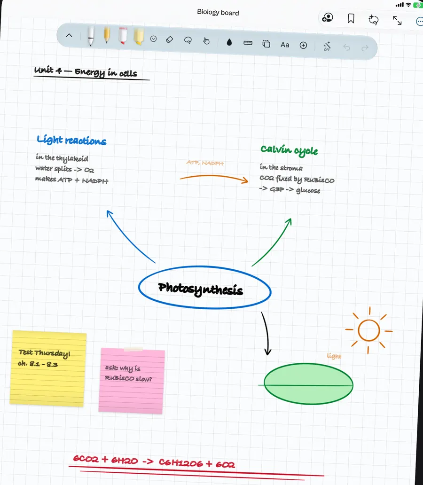
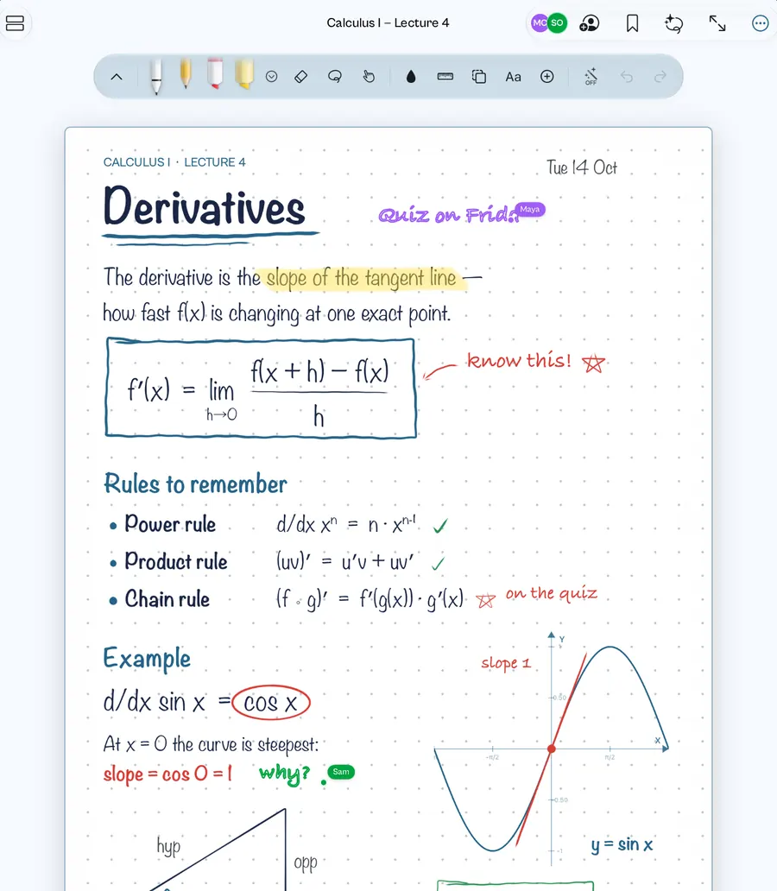
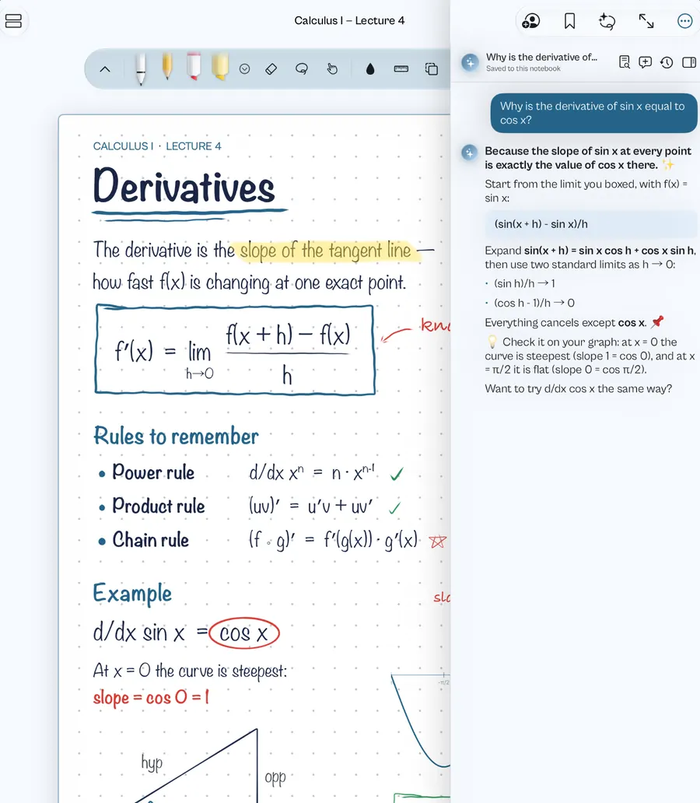
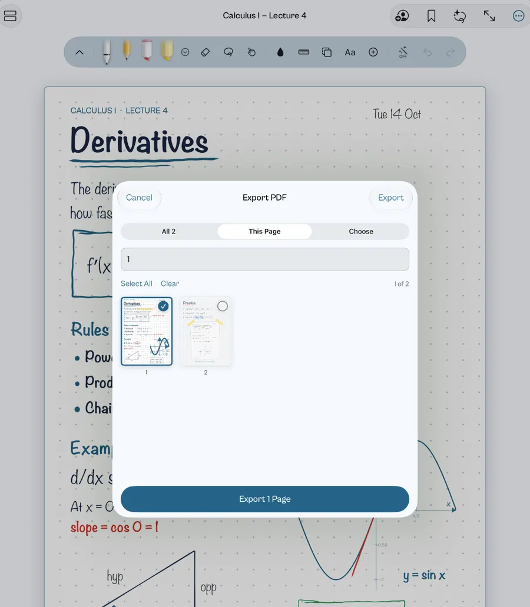
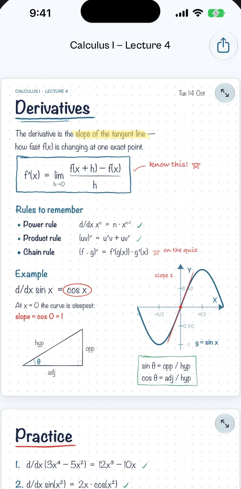

More than ink
Voice notes, graphs, sticky notes, tape, text boxes, a paint bucket and links from one page to another, all sitting on the page with your handwriting.


For iPad · read on iPhone
ClassNotes is a handwriting-first notebook for iPad. Write with real pens, keep every notebook on a bookcase of your own, and ask NOVA, a study assistant that reads only what you let it.
Free to start. No account needed to write. Every paid plan begins with a 14-day free trial.

The film
What makes it ClassNotes
Most notes apps are a list of files with a canvas attached. ClassNotes starts from how a student actually works: a pen in hand, a notebook per subject, a place for everything.
Writing that feels like paper
Nine instruments in three families, each with its own ink, weight and colour. Keep several copies of one pen in different colours, set three quick sizes, and what you see under the Pencil is exactly what stays on the page.
Pause at the end of a line and it settles into a clean circle, box, triangle or arrow. Keep the Pencil down to resize it before you lift.
Lay two fingers on the page and a straight edge appears. Draw along it and the ink follows the edge, for lines that are actually straight.
Scrub over a word like you would with a pencil and it's gone. It takes only what you really covered, so underlines and neighbours stay.
Turn on beautify and your lines are typeset as you write, in the font you pick, in many languages. Equations and drawings stay yours.
The library is a room
Your notebooks stand spine out on wooden shelves. Hover or hold one and it turns to show its cover; tap and it swings open like a book. Paint the wall, pick oak or stone, and put things you love beside your books.


Boards on the wall
A whiteboard isn't a book on a shelf, it's a board on your wall: aluminium frame and marker tray, or a wooden frame with a chalk ledge when the board is dark. Tap one and it flies off the wall and opens.

Endless whiteboards
A whiteboard opens wide and keeps growing to the right and down as you write, so you never run out of board. Pinch from the whole board at 5% right in to 400%, with the ink crisp at every zoom.

Write together
Invite people by email and watch their strokes appear as they draw. Choose who can edit and who can only look. Your own copy stays on your device, and leaving or being removed always tells everyone involved.

NOVA, your study assistant
Circle part of a page and ask what it means. Switch on "Read this notebook" and NOVA answers from your own pages, with page numbers you can tap. Maths comes back as real maths, and a snip is answered as a picture, so diagrams and graphs count.
NOVA can be wrong. Check what matters, and follow your school's rules about AI.

Bring it in, send it out
Drop in a PDF and it stays crisp and searchable. Bring DRM-free EPUB books, scan paper with the camera and straighten it, or send any file from the share sheet with Open in ClassNotes. Write on all of it.

iCloud and iPhone
Notebooks travel through your own iCloud Drive to your other iPad and your iPhone, where every page is ready to read and zoom. If two devices change the same notebook, you keep both versions. Nothing is merged behind your back.

Voice notes, graphs, sticky notes, tape, text boxes, a paint bucket and links from one page to another, all sitting on the page with your handwriting.
Run a code block right on the page, offline: JavaScript, Python, and C or C++, with a calm terminal beside it. Nothing is sent anywhere.
Deleted notebooks and pages wait 30 days. A damaged file is set aside, never written over, and your library is rebuilt from the notebooks on disk.
Ready-made themes from bright paper to midnight, a colour studio for your own, and the room dresses to match if you like.
Plans
Every paid plan begins with a 14-day free trial. Prices are in US dollars; the App Store shows yours.
Everything you need to take notes.
$0
No card, no trial clock.
Every tool, for the work you do now.
$2.49 / month
or $21.99 a year (about $1.83 a month)
For every course and every semester.
$3.99 / month
or $34.99 a year (about $2.92 a month)
The most NOVA, the most room.
$7.99 / month
or $69.99 a year (about $5.83 a month)
Stop paying, or never start: every notebook you have still opens, you can still write in it, export it and sync it. A limit only ever stops you creating something new. And if you used ClassNotes before version 1.19, you keep every tool and unlimited notebooks, free, for good.
Questions
An iPad on iPadOS 26 or later for writing, and an Apple Pencil: the Pencil writes while your fingers scroll, pinch and move things around. On iPhone, iOS 26 or later, ClassNotes is a viewer: read, zoom and share every page, without editing.
No. Without one everything works except NOVA and shared notebooks, and nothing you write leaves your device apart from your own iCloud. A free ClassNotes account (email, password, name) unlocks NOVA and sharing.
Nothing. They stay on your devices as files you own: you can open and write in them, export them as PDF and keep syncing them. A limit only stops you creating new notebooks past your plan's number.
Basic, Plus and Max each start with 14 days free, as an App Store introductory offer: one per Apple Account. Cancel before it ends in Settings, your name, Subscriptions, and you pay nothing.
Without an account, nobody: ClassNotes sends nothing of yours to us. NOVA asks your permission before anything is sent, says what goes to whom, and you can withdraw it any time. No ads, no tracking. Read the Privacy Policy.
Sign in to the same Apple Account with iCloud Drive on, open ClassNotes, and your notebooks come across. Or export any notebook as a PDF.
Start with Support, or email support@classmateapp.org. We usually answer within two working days.